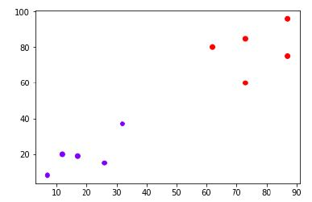
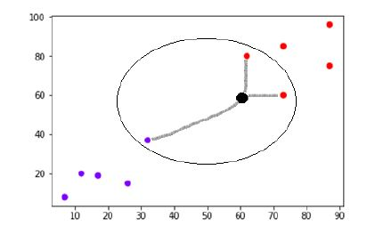

K-nearest neighbours
Classification / Instance-based learners / K-nearest neighbours
K-nearest neighbors (KNN) algorithm is a type of supervised ML algorithm which can be used for both classification as well as regression predictive problems. However, it is mainly used for classification predictive problems in industry. The following two properties would define KNN well −
- Lazy learning algorithm − KNN is a lazy learning algorithm because it does not have a specialized training phase and uses all the data for training while classification.
- Non-parametric learning algorithm − KNN is also a non-parametric learning algorithm because it doesn’t assume anything about the underlying data.
Working of KNN Algorithm
K-nearest neighbors (KNN) algorithm uses ‘feature similarity’ to predict the values of new datapoints which further means that the new data point will be assigned a value based on how closely it matches the points in the training set. We can understand its working with the help of following steps −
Step 1 − For implementing any algorithm, we need dataset. So during the first step of KNN, we must load the training as well as test data.
Step 2 − Next, we need to choose the value of K i.e. the nearest data points. K can be any integer.
Step 3 − For each point in the test data do the following −
- Calculate the distance between test data and each row of training data with the help of any of the method namely: Euclidean, Manhattan or Hamming distance. The most commonly used method to calculate distance is Euclidean.
- Now, based on the distance value, sort them in ascending order.
- Next, it will choose the top K rows from the sorted array.
- Now, it will assign a class to the test point based on most frequent class of these rows.
Step 4 − End
Example
The following is an example to understand the concept of K and working of KNN algorithm −
Suppose we have a dataset which can be plotted as follows −

Now, we need to classify new data point with black dot (at point 60,60) into blue or red class. We are assuming K = 3 i.e. it would find three nearest data points. It is shown in the next diagram −

We can see in the above diagram the three nearest neighbors of the data point with black dot. Among those three, two of them lies in Red class hence the black dot will also be assigned in red class.